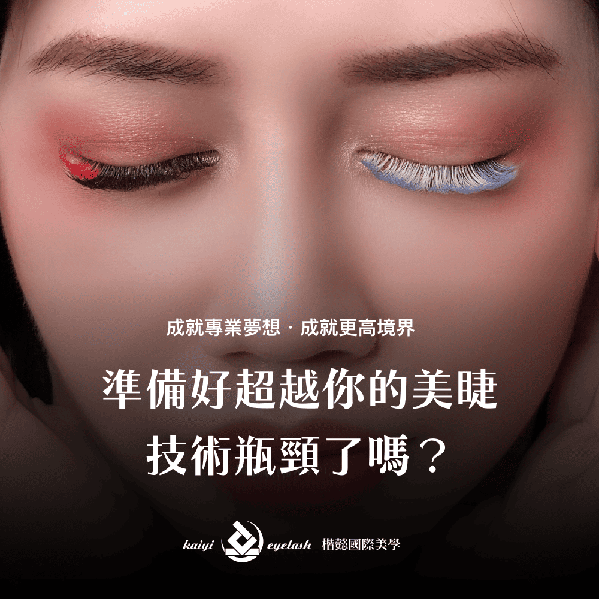

越接觸不同的產業，越了解他們的行銷生態
此著陸頁設計巧妙切入同業痛點，以「作為一名美睫師，我們常面臨各種技術問題...」開頭，迅速引起目標客群共鳴。頁面條列「客人心中期望落差大」、「感覺沒有完整學習」及「需要許多基本小技巧」等核心困境，搭配具體提問與視覺對比圖，深化問題感知。
整體設計旨在精準點出美睫師在學習與實務中的挑戰，有效建立專業形象與信任感，為後續課程或服務的導入做好強而有力的鋪墊。


透過朋友介紹的著陸頁設計專案
美睫師痛點解析，專業解決方案引導頁

此著陸頁設計巧妙切入同業痛點，以「作為一名美睫師，我們常面臨各種技術問題...」開頭，迅速引起目標客群共鳴。頁面條列「客人心中期望落差大」、「感覺沒有完整學習」及「需要許多基本小技巧」等核心困境，搭配具體提問與視覺對比圖，深化問題感知。
整體設計旨在精準點出美睫師在學習與實務中的挑戰，有效建立專業形象與信任感，為後續課程或服務的導入做好強而有力的鋪墊。